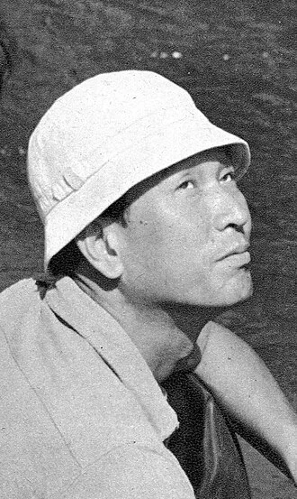
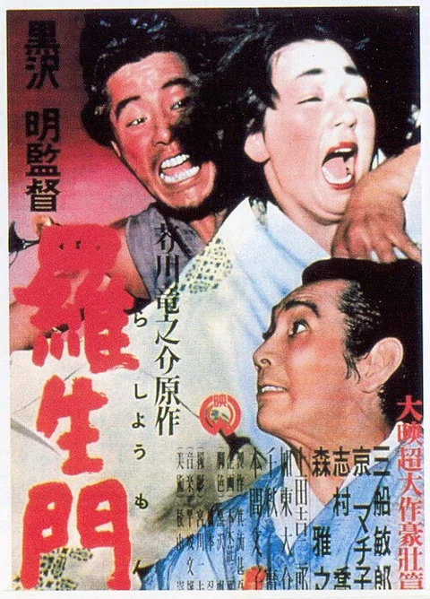

Explore film ↗
Explore film ↗Seven Samurai
Akira Kurosawa
DIRECTOR PROFILE
Akira Kurosawa (黒澤 明 or 黒沢 明, Kurosawa Akira; March 23, 1910 – September 6, 1998) was a Japanese filmmaker who directed 30 feature films in a career spanning six decades.

LIFE & CAREER
Akira Kurosawa (黒澤 明 or 黒沢 明, Kurosawa Akira; March 23, 1910 – September 6, 1998) was a Japanese filmmaker who directed 30 feature films in a career spanning six decades. With a bold and dynamic style strongly influenced by Western cinema yet distinct from it, he is widely regarded as one of the greatest and most influential filmmakers in the history of cinema. Known as a hands-on filmmaker, he was heavily involved with all aspects of production as a director, writer, producer, and editor.
Adapted excerpt from Wikipedia, CC BY-SA 4.0. Pronunciation notes omitted.
Read the full biographyImage: 映画の友 (Eiga no tomo). Source & rights: Public domain ↗.
Profile reference: Director background ↗
Open this director checklist ↗
A selection of this director’s films available in the archive.
Explore film ↗Akira Kurosawa
 Explore film ↗
Explore film ↗Akira Kurosawa
 Explore film ↗
Explore film ↗Akira Kurosawa

Explore film ↗Akira Kurosawa